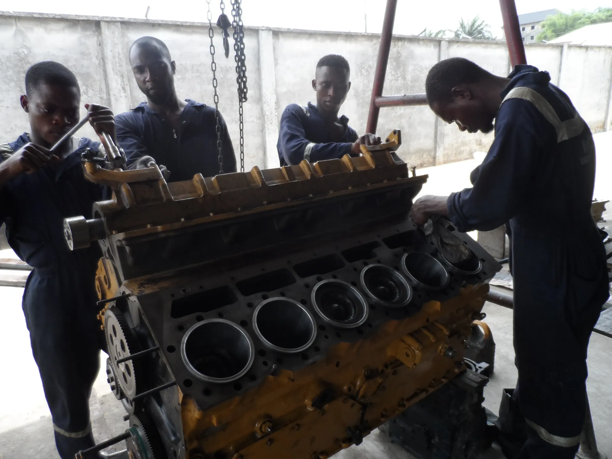
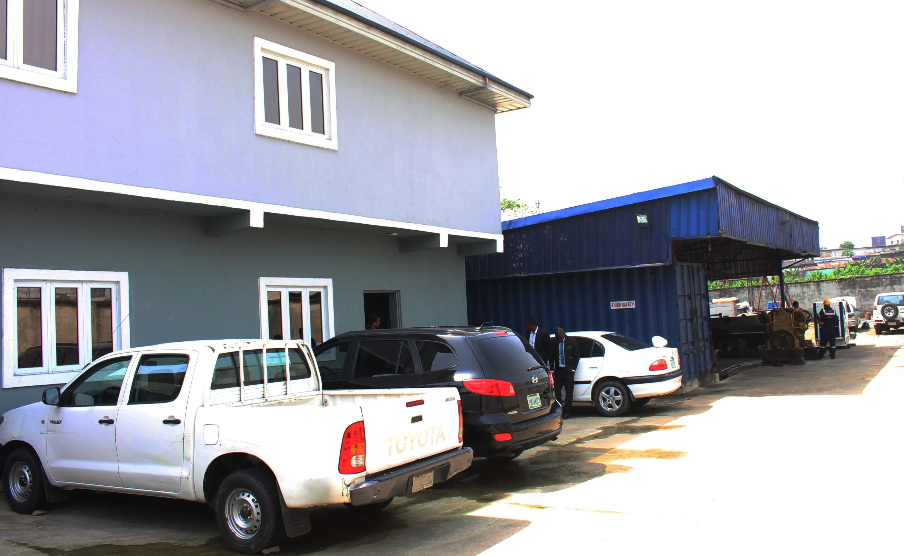

Vessel Maintenance and Technical Services in Nigeria
Kenoc Nigeria Limited provides reliable marine equipment maintenance, engine servicing, and technical support to vessel operators and marine companies operating in Port Harcourt and surrounding areas.
Who We Are
Kenoc Nigeria Limited is a marine and engineering services company based in Port Harcourt, Rivers State. Since 1999, we have provided vessel maintenance, equipment servicing, and technical support to marine operators and oil and gas service companies working in the Port Harcourt harbor and waterways.
Our focus is on keeping vessels operational through routine maintenance, repair work, and reliable technical services. We work with local vessel operators, marine logistics companies, and service providers who need dependable maintenance support.
Learn more about usWhat We Do
Six core services supporting vessel operations in Port Harcourt
Marine Equipment Servicing
Routine maintenance, troubleshooting, and repair of marine diesel engines and propulsion systems.
Learn more →Marine Engine Maintenance
Service and repair of pumps, winches, hydraulic systems, and other onboard marine equipment.
Learn more →Generator & Power Systems
Maintenance and support for auxiliary generators, power distribution, and electrical systems.
Learn more →Marine/Industrial Equipment Procurement & Supply
On-site technical assistance, fabrication support, and mechanical repair work as needed.
Learn more →Marine Engine Installation
Marine engine installation services cover the complete process of fitting new or replacement diesel engines into vessels.
Learn more →Routine Inspection & Preventive Maintenance
Scheduled inspection services and preventive maintenance programs to reduce downtime.
Learn more →Trusted by leading companies


Our Projects
An overview of our recent operations and the specialized vessels we’ve serviced.




Why Work With Kenoc
Established Presence
Operating in Port Harcourt since 1999 with direct knowledge of local vessel operations and harbor conditions.
Experienced Technicians
Our team has hands-on experience with the marine equipment and engines commonly used in the Region
Reliable Service
We prioritize getting vessels back in operation with minimal downtime through responsive maintenance support.
Local Supply Networks
Established relationships with suppliers enable us to source parts and equipment efficiently.
Need Maintenance or Technical Support?
Contact us to discuss your vessel maintenance requirements or request service information.
Get in Touch